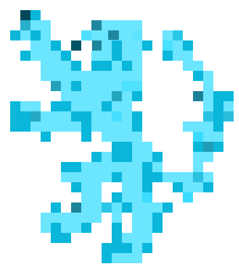
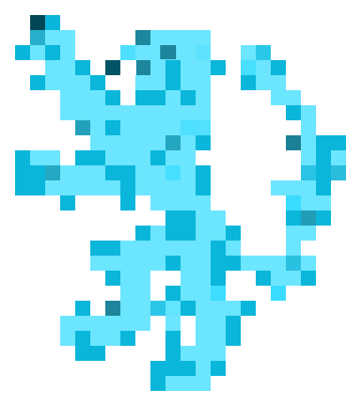

Ascendentes
Ascendentes
Aries ✧ Touro ✧ Gemeos ✧ Cancer ✧ Virgem ✧ Libra
Escorpiao ✧ Sagitario ✧ Capricornio ✧ Aquario ✧ Peixes
 Signos do Zodíaco
Signos do Zodíaco
O que se conhece como signo é na verdade o signo solar, responsáveis pelo do Sol em relação à Terra no
momento do nascimento de cada pessoa. O signo solar sinaliza características da sua personalidade,
mas você tem outros signos marcantes, como o ascendente ou a lua.